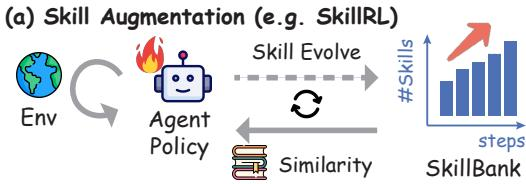
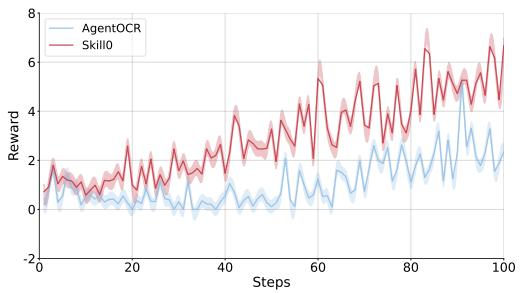
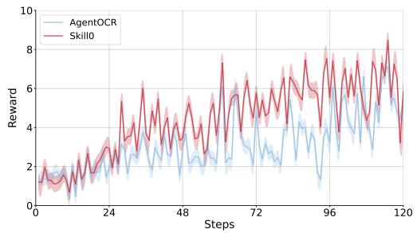
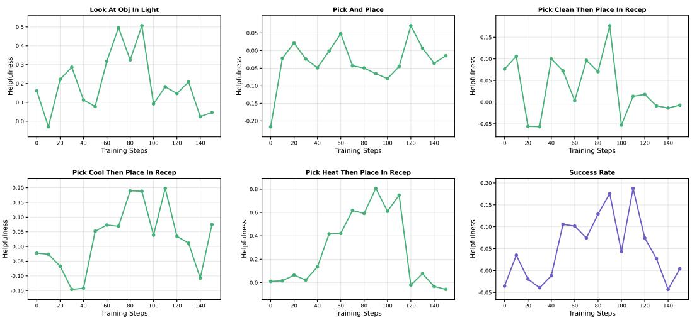
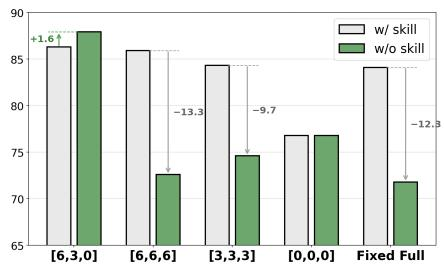
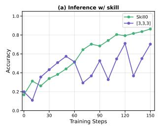

01
The Core Idea
Augmentation vs. Internalization


Turning runtime skill packages into model parameters — so agents act zero-shot, with no retrieval and no token overhead at inference time.

Agent skills — structured packages of procedural knowledge and executable resources that agents dynamically load at inference time — have become a reliable mechanism for augmenting LLM agents. Yet inference-time skill augmentation is fundamentally limited: retrieval noise introduces irrelevant guidance, injected skill content imposes substantial token overhead, and the model never truly acquires the knowledge it merely follows.
We ask whether skills can instead be internalized into model parameters, enabling zero-shot autonomous behavior without any runtime skill retrieval. We introduce SKILL0, an in-context reinforcement learning framework designed for skill internalization. SKILL0 introduces a training-time curriculum that begins with full skill context and progressively withdraws it. Skills are grouped offline by category and rendered with interaction history into a compact visual context, teaching the model tool invocation and multi-turn task completion. A Dynamic Curriculum then evaluates each skill file's on-policy helpfulness, retaining only those from which the current policy still benefits within a linearly decaying budget, until the agent operates in a fully zero-shot manner.
Success-rate improvement over the standard RL baseline on embodied household tasks.
Improvement on multi-turn search-and-answer reasoning over the RL baseline.
Substantial additional gains reported across the agentic task suite — all while operating zero-shot at inference.

Skills are grouped offline by category and rendered with interaction history into a compact visual context that teaches tool invocation and multi-turn task completion.
A skill-enhanced agent loop runs reinforcement learning while the model still sees skill context — bootstrapping competent tool use.
Each skill file's on-policy helpfulness \(\Delta_k\) is measured; only beneficial skills are retained within a linearly decaying budget — until the agent runs fully zero-shot.


| Method | ALF Avg↑ | ALF Cost | SQA Avg↑ | SQA Cost |
|---|---|---|---|---|
| Qwen2.5-(VL)-3B-Instruct | ||||
| Zero-Shot | 15.2 | 1.21 | 15.9 | 0.48 |
| Few-Shot | 29.3 | 2.30 | 17.9 | 0.86 |
| GRPO | 79.9 | 1.02 | 36.4 | 0.61 |
| AgentOCR★ | 78.2 | 0.38 | 34.2 | 0.26 |
| EvolveR | 44.1 | 1.89 | 38.2 | 1.00 |
| SkillRL† | 82.4 | 2.21 | 38.9 | 0.87 |
| SKILL0★ | 87.9 | 0.38 | 40.8 | 0.18 |
| Qwen2.5-(VL)-7B-Instruct | ||||
| Zero-Shot | 31.3 | 1.08 | 17.5 | 0.70 |
| Few-Shot | 48.4 | 2.12 | 20.1 | 0.97 |
| GRPO | 81.8 | 0.95 | 41.9 | 0.73 |
| AgentOCR★ | 81.2 | 0.43 | 40.1 | 0.36 |
| EvolveR | 43.8 | 1.00 | 43.1 | 1.00 |
| SkillRL† | 89.9 | — | 47.1 | — |
| SKILL0★ | 89.8 | 0.41 | 44.4 | 0.34 |
| Method | Infer w/ Skills | 3B Score↑ | 3B Acc↑ | 3B Tok↓ | 7B Score↑ | 7B Acc↑ | 7B Tok↓ |
|---|---|---|---|---|---|---|---|
| Baselines | |||||||
| Zero-Shot | — | 23.4 | 6.3 | 0.46k | 26.8 | 7.8 | 0.48k |
| Few-Shot | ✓ | 45.8 | 18.4 | 0.78k | 51.2 | 24.2 | 0.91k |
| AgentOCR | — | 75.2 | 56.3 | 0.42k | 78.6 | 59.3 | 0.40k |
| Ours: RL w/ Skills | |||||||
| SKILL0 | ✓ | 80.9 | 64.1 | 0.94k | 85.3 | 71.9 | 0.89k |
| SKILL0 | — | 78.6 | 66.4 | 0.49k | 85.1 | 74.2 | 0.46k |
| Method | w/ S | w/o S | Δ |
|---|---|---|---|
| Filter & Rank & Select | 86.3 | 87.9 | ↑1.6 |
| w/o Filter | 81.6 | 78.9 | ↓2.7 |
| w/o Rank (Random Select) | 76.6 | 62.9 | ↓13.7 |






@article{paperskill0,
title={SKILL0: In-Context Agentic Reinforcement Learning for Skill Internalization},
author={Unknown},
journal={arXiv preprint},
year={}
}